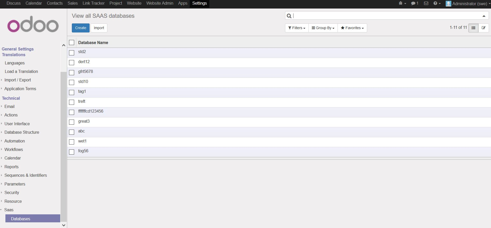

Manage SAAS databases

Keep track of all your saas database.
Instructions
1. Go to 'Settings->Saas->Databases'
Sign up via web form
Let others try out your specially setup odoo configuration
Instructions
1. Go to the "Try Odoo" menu on your website
2. If everything is setup the user should automaticly get logged into thier instance once it's created
3. A new partner is also created in your database with 'saas_partner' field set to true which can be used for mail campaigns

Find a bug? feature idea? send an email to steven@sythiltech.com.au